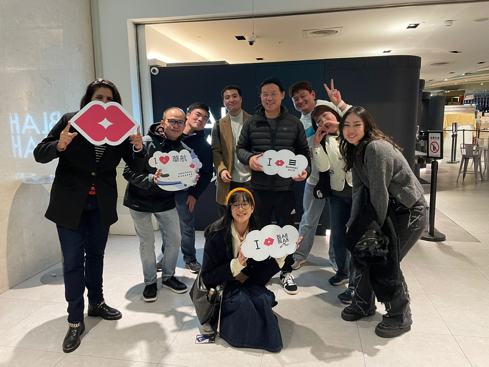
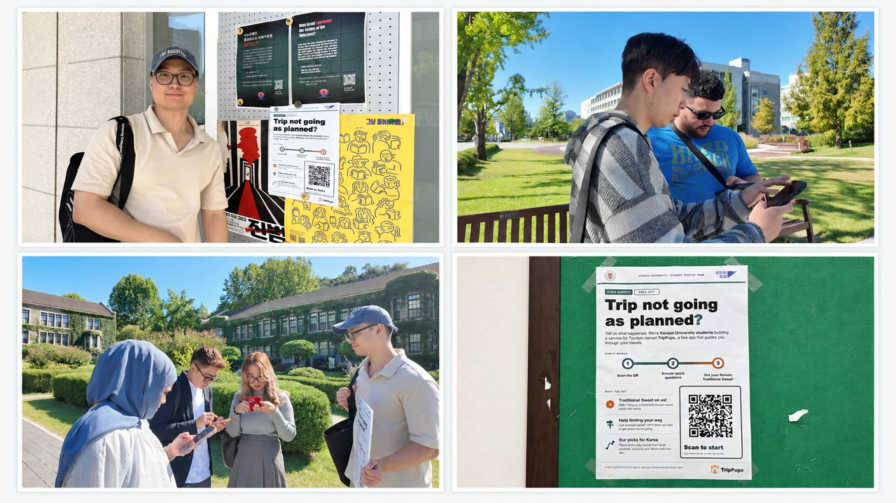

2026 보물섬 인사이트 트립 지원
여행자를
한 곳 더, 하루 더.
외국인 자유여행 앱 TripPups를 만들며
여행자가 어디서 멈추고 떠나는지 봐 왔습니다.
정회광 · 연세대학교 화학과
운행2026.10.12 (월)
이번 역보물섬 인사이트 트립
다음 역영종도 · 무의도 · 신시모도
직접 만든 여행 앱TripPupstrip-pups.com · 2026.09 공개
교내 외국인 유학생약 50명여행 이야기를 직접 들음
공개 후 방문 기록18일 분석사람과 봇을 나눠 계획 수정
창업 지원 사업모두의 창업2026 지원 · 사업계획 작성
01 · 여행자로
필요한 곳에서만 받는 현지 안내
대만에서 현지 가이드와 함께한 Pub crawl. 여행자는 현지인이 즐기는 것을 궁금해한다는 걸 느꼈습니다.

02 · 현장에서
“계획이 틀어지면 어떻게 하세요?”
교내 유학생을 만나 묻고, QR 포스터를 붙여 여행 중 계획이 바뀌는 순간을 모았습니다.
